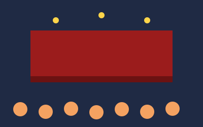
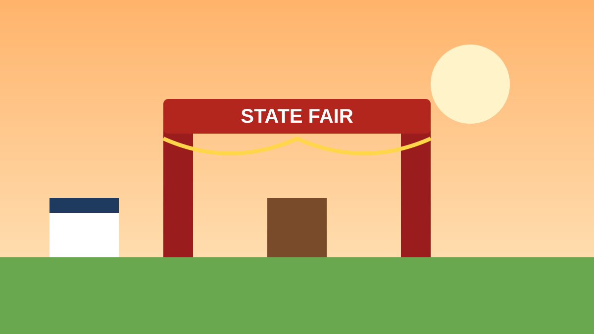
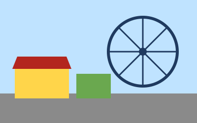

Grandstand Concerts
Live music every night, with seating for thousands.
Eleven days of food, music, and farm fun.

Cream puffs, cheese curds, livestock barns, and a grandstand lineup you will not want to miss. Bring comfortable shoes and an appetite.

Live music every night, with seating for thousands.

Over 200 vendors, from classic cream puffs to deep-fried everything.
Meet the animals, watch the judging, and see the harvest competitions.